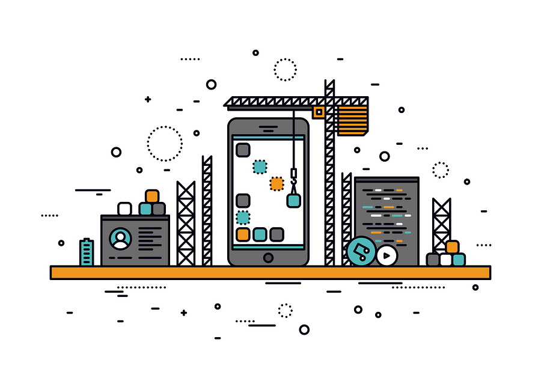
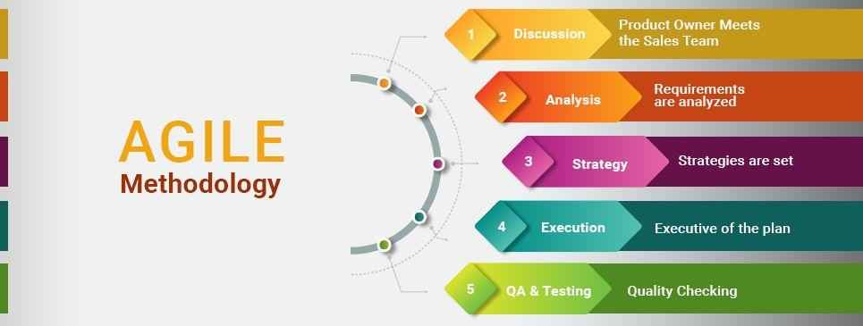
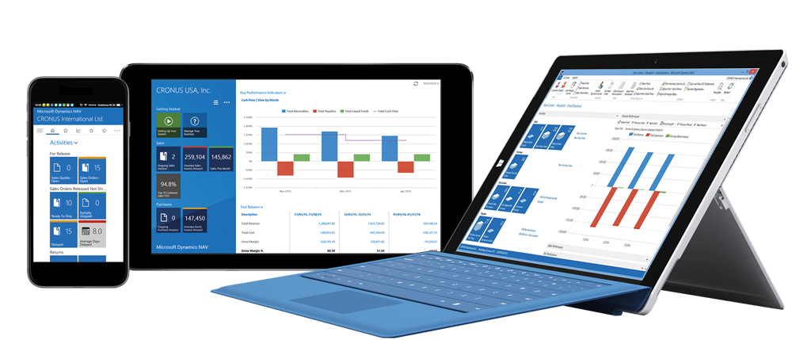
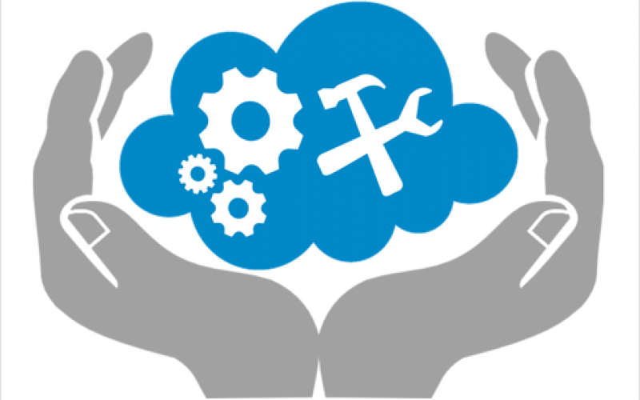
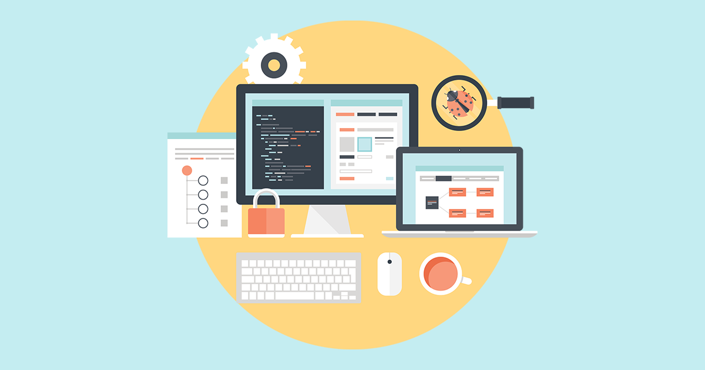

Assignment 1
1.1 Describing the purpose of IT in modern business
To understand the role of IT (Information Technology) in modern day businesses, we should first understand what IT is, and where it is used. Information technology in its most mundane interpretation is the exploration and use of computers and telecommunications (systems) for storing, retrieving, and sending information.
I have experienced a variety of different business environments in my career; from being a waiter in a small town restaurant to business administration in private businesses , leading into information migration roles at the NHS. The most common element these different business environments had in common was their heavy dependance on IT to process and store information. Information can be hand written, verbal, on a spreadsheet (or in any other format) but by incorporating digital or mechanical methods (systems, software, internet, telephones, etc) businesses can make sure they run effectively and efficiently
Incorporating Information Technology promotes modernisation, builds business innovation and growth, whilst preventing stagnation and miscommunication. However, IT is not just used for communication and data processing and retrieval. The efficient production of new data, constructing business infrastructure, conducting research and development , carrying out financial planning, business purchases and security matters are all areas in which Information Technology advances innovation and productivity. From regular everyday office peripherals (printers, computers, calculators) to digital tools (software, GPS), incorporating Information Technology and automation helps businesses save costs and time and whilst upholding security standards.
1.2 Describing methods, skills and resources needed to complete digital projects successfully
To successfully complete this project I intend to effectively plan my project using a Agile method rather than following a Waterfall method. To be more specific I will be using Kanban; which is actually an Agile methodology. To appreciate the reasoning behind this choice it is first essential to know that a software development methodology is simply a strategy of organising the project work.
Whilst a Waterfall method has its advantages, I chose an Agile method because I will be making frequent changes during the development stage of my website project. Since the Waterfall method relies on linear finite stages of action; it would not respond well to my flexible approach, and the frequent changes I have in plan for this project. Also as there is a fast approaching deadline to this project; an Agile method will allow me to swiftly develop a rudimentary working version of website, which I can later improve upon in successive iterations and sprints. My finished project will be presented as a website.
Choosing a Kanban method for planning also allows me the advantage of using digital boards (Trello) to visualise my workflow in interactive lists and tiles. As I have used this method once before when completing a python text based adventure game with a team I lead; I posses valuable experience using this method, and know I can effectively manage my time and make detailed plans using this method.
In order for me to successfully complete this project I will use my arsenal of different skills. They range from web programming adeptness to testing, design, time management and project management skills. During this processes I will use my patience and resilience skills to overcome any obstacles I encounter. I also have confidence that I can pick up new skills quickly both from online sources (codecademy, w3schools), and from my tutor.
The beginning of my project will be started by first brainstorming and then I will finalise my project stages on my Trello board using my project management skills. I will also be using Trello to manage my time, making sure to set deadlines alerts. Furthermore, my graphical skills (photoshop, edits) will be projected in my project.
I will also be using the markup language HTML (hyper text markup language) to create html documents; which display the contents of my website (text, images, links). In order to style (layout, colours, font) my website; I will be using CSS (Cascading Style Sheets) in a different file and connect it to my html file. Finally, to add interactivity and behaviour to website I will add Javascript to my website in a separate file. Javascript is a programming language and is a great way to add interactivity to a website. All this code will then need to be tested by me multiple times for bugs, luckily I quite enjoy this process. Excellent time management and project management skills will also be needed.
Resources needed to complete a website include a computer system and a the code editing software like Visual Studio Code. A project budget will need to be considered if needing to acquire licenses. Access to the internet will also be needed, as well as an basic image editor. I will also create a wireframe using the website Marvel. I will also use the online repository Github to save and access my project at different save states. Saving my work on the cloud will also allow me to work on my project in different location and systems.
1.3 Plan and carry out tasks using IT
I will be planning my project using the Kanban method, and through the online resource Trello. Taking into account the assignment brief and the purpose of the project; I will begin by writing a master plan of the actions needed to be taken in order to complete the project successfully. I will then calculate approximate time frames and deadlines for each of the stages and incorporate them in my planning board (Trello).
The master plan will need a content strategy for everything I plan on displaying on my website (content, pictures, text). Also website wire frames will be included in my planning using the online resource Marvel. I believe making wire frames will save time later when designing the website. While creating the wireframe I can plan the website structure, design and user navigation. Testing will also be needed to be carried on Visual Studio Code out before finishing the project.
Planning my project on Trello is perfect as it is a bright and visual work place that has boards to manage my workflows and stages. On the Kanban board I will then create named lists such as ‘To Do’, ‘Doing’, ‘Done’ and Improve’. I can then create named cards with a task name and assign them to the right list/category. These planning cards have many detailed productivity features; allowing me to create detailed instructions and instructions, as well as the capacity to store attachments for my project. My time frames and deadline for each task can also incorporated into each of these cards. The link to my Trello Board is https://trello.com/b/79SLtAmR/project-2.
1.4 Describe the risks that might impact digital projects
When planning out my project, I will need to anticipate and take into account potential risks that may jeopardise my project like timing, bad planning, digital optimisation and security. I will also need to expect the unexpected. In order to identify risks I will evaluate risks involved with each stage of my project and create a risk migration system. Which I will then take into account when creating my task cards in Trello.
I personally see bad planning and the misuse of time as the biggest risks. I will need to make sure I correctly allocate and estimate time frames for each task. Whilst it is not always possible to correctly approximate time schedules for projects tasks; I will need to make sure that I approach challenges with flexibility and priority. Misalignment with project objectives and being overambitious is another risk that I will need to be wary of. For example I need to make sure I don’t spend too much time on the websites appearance and user experience (UX). Otherwise the quality of my written content and other parts of the website may be affected. The project has to stay within its scope, and as long as I create an early working product, it can later be improved upon in iterations and sprints.
Unforeseen risks like programming language, browser or system updates may also impact the project. Which is why I will allocate extra time and make sure my project is finished before the deadline. Other risks like security can be accordingly managed with passwords, protocols and effective anti-virus software.
1.5 Describe how you would go about selecting and using IT systems and software
It’s important that I select the correct IT systems for my digital project to ensure that I get optimal performance and reliability. As I know from my assignment that I need to create a website, I can call upon my previous web development educational knowledge, and also conduct online research on which technologies and software I will need. Other valuable sources of information include my course tutor and fellow course colleagues. As every new project is unique; I will receive my information from a variety of different sources. From my previous knowledge of creating websites; I know that for the front end of my website I will need to use HTML (for structure and content), CSS (for styling and formatting) and Javascript (for behaviour and interactivity). I know will also need a laptop/ pc and a text editor (Visual Studio Code) to code my website. Trello will also be need for my Kanban method of planning. Using online research (W3 Schools, Mozilla MDN) I will choose the correct technologies so that my website runs on all browsers and Mac, linux and windows operating systems. I will also be using Slack to communicate with my tutors and fellow colleagues, and to also share files.
1.6 Describe and provide analysis on how your chosen technologies have helped you achieve your outcomes
Trello has helped me a lot as it has allowed me to plan and track my workflow. I started off with making lists for my project to delegate tasks into, and then ordered my tasks in priority and set up time schedules and deadlines. These alarms and notifications were great when managing time, as I got them both on my laptop and mobile (email). I also used colour labels for my tasks for extra dept and visualisation when categorising. The ability to add lists, alarms and sublists within each task card was also great as it allowed me to manage multifaceted tasks.
Trello checklists are also great for motivation and breaking down bigger tasks into more manageable chunks. Overall though, I must say that the visualisation was one of the greatest aspect, even features things like changing the background picture for the board was uplifting and breaks tedium.
Slack was also a great tool as it allowed me to communicate with my course colleagues and tutor whenever I needed help, inspiration or guidance. It also allowed me to save project files and notes which I could later access at home using cloud services.
Choosing to implement html media queries into my website was a mistake as I had not fully mastered them when using them, so I learnt on the go, and wasted time a result.
1.7 Describe legal guidelines and constraints that impact digital projects
When creating my project I will need to adhere to General Data Protection Regulation (GDPR) regulations. GDPR is a regulation enforced to keep safe the privacy of European Union citizens; it relates to Non-Personal Data and Personal Data that is accumulated when using data capture entities, including websites [1]. As my project involves creating a website it is important that I not only follow GDPR but also recognise how GDPR restrictions will impact my project.
To make sure I do not breach GDPR regulations I will make sure my project does not collect any user information when users are accessing my website. In fact my website will be designed to not save or collect any user data. If I do need to create a future project where collecting user data is in the brief; I will make sure I encrypt all personal data securely and also inform users beforehand and give them a choice.
Another legal guideline that my project will have to take into account when planning is copyright and plagiarism. To ensure compliance with copyright legislation; I will make sure to create my website with my own self created content and free stock media. I will also need to make sure I have licences and permissions to all programs, images, videos and software used.
[1] https://rdwgroup.com/blog/gdpr-impact-web-development/
2.1 Review the ongoing use of IT tools and change approach as needed

I am very happy that I chose to use Visual Studio Code as my text editor in order to complete my website. This text editor was especially helpful as it had coloured syntax which helped me spot mistakes in my code. It also had an auto complete feature which provided closing tags to my syntax which save time. After some time, I went into the program’s settings to make changes that I needed to be more efficient. I changed the colour scheme of the program and syntax colouring to something less bright so that eyes got less fatigued over time. I also installed useful extensions like ‘colour picker’ and ‘live server’ which showed me an array of colour codes and updated my website changes in real time respectively, saving me time.
On my planning board Trello; I started off with basic task cards but I soon realised I need to make my task cards more detailed with productivity features. Therefore, I then added colour labels (to prioritise) and deadlines (manage time) to my task cards which helped me out more. The colours helped me visualise and was good for my memory, the deadlines and notifications helped me keep on track.
I also realised that I preferred to complete my project on a macbook as it had a better trackpad and free word processing software than my original windows laptop didn’t have. So in the end I finished the project on my macbook.
2.2 Describe whether the IT tools selected were appropriate
The IT tool I used to programme my website was Visual Studio Code. I chose this program as it was cross platform and was supported by Microsoft, macOs and Linux; meaning I could program from a range of different machines and systems. It also started up fast and didn’t take up much memory or resources on old systems. I also loved the editor’s code completion and code hinting features which greatly assisted me in coding my project with the correct syntax. The integrated version control (git) features was also useful to initialise git commands such as commit, pull, push and publish. What I didn’t like about Visual Studio Code was the time it took for me to get familiar with it (learning curve). My previous web development experience came from using Sublime text editor and getting use to a new html editor took a little longer than I allocated for.
I am also glad that I used the web based project management system Trello as it was incredibly visual and very flexible. Using the boards which have lists and cards to manage project stages; helped me to simplify, prioritise and keep on track of complex tasks. The ability to prioritise tasks with colours according to priority was also very useful and effective. Trello is also available on Mobile platforms; which meant I always had access to my plans in any environment. Also as it was digital it meant I saved paper and didn’t have to waste money or resources on notes and ink. The disadvantages to Trello was that I always needed a internet connection/ data plan otherwise I had to refer back to a screenshot or printout of my Trello board at an earlier state. Another disadvantage to Trello was that there is only a 10 mb storage limit for the free account and my project budget did not allocate for me to spend on a more premium plan.
2.3 Assess the strengths and weaknesses of your final project
Overall I am pleased with my website as I feel I have completed the website with rich appropriate content and features, whilst making it easy to access, read and navigate for all users. I made sure that navigation bar was at the top and easy to spot. The content in my website is clearly defined and relevant to my assignment. I have made it easy to read, making sure to use a appealing font with big font sizing. I tested my font choices on my class colleagues before making my final choice; taking into consideration the feedback I received. I also made sure the homepage of my website had a responsive design and had full mobile support. This was achieved using html media queries and flex box positioning . Also in order to judge whether the design of the website was effective, I posted a questionnaire online regarding my websites appearance on a forum; I discovered 69% had a fondness for my website’s design. According to my feedback the reason why people liked my design was the colour scheme and modern look of the design.
I must also admit that my website has weaknesses, mostly due to the time frame afforded to complete the project. There was not enough time for me research and incorporate everything I wanted. Also due to mismanaged time I couldn’t make my entire website responsive and mobile compatible, so I prioritised my homepage to be responsive with mobile features but only managed to make parts of the other pages responsive. I also didn’t have the time or money to buy the exact media content I wanted for my website, so I resorted to free stock media. Also the structure of some of my webpages could have been structured in a cleaner fashion in my personal opinion. If I did this website again I would spend my time creating a website design first, and would then spend time on the content of the website. I would also cut out the responsive features and spend less time on choosing the media content.
2.4 Describe further improvements you can make to your project
If I did this website again I would add more white space, as some parts of my website seem cluttered. I believe adding more white space may increase the users attentions and focus on certain chosen areas on my website. I would also research and learn how to optimise my webpage speed. This is something I attempted to learn and implement but failed to do so effectively with my time frame. Slow loading speed is a deterrent for most users visiting a webpage, but I managed to still keep my webpage snappy by limiting the amount of images and videos I used. One other improvement I would make to my website; is to make it more memorable and visual by using more relevant images and videos, instead of just stock media. I believe that using the correct images / videos, and wisely pairing them with corresponding content would create a more intimate connection between the user and my website. Another way to achieve this, would have been to hire an camera and take my own pictures.
2.5 Review outcomes to make sure they match requirements and are fit for purpose
Before starting his website I wanted to make sure that my finished website would be easy to read and access. The website was also planned to be imaginative, modern, interactive, appealing, and suitable to the brief. The finished product also had to be fully functional as-well. Meaning navigation links needed to work and all content had to be visible online. With the ever present constraint of time I had to prioritise certain areas of the project over others, but I still believe my project outcome meets the requirements of a fully functioning website. I started of by creating a simple working model of my website and then improved it in iterations and sprints.
I believe that I accomplished my goals in making the website fully functional, easy to access and read; as all the content works and is suitably spaced out and positioned. To confirm this; I tested the finished website on colleagues who agreed. I also tested the website for bugs and let a total of 11 random users test it, and found that all content correctly loaded and navigation links correctly worked. In order to to create a modern looking website I used google fonts and incorporated unique large model font typography. This was to provide subtle hints at my websites genre and provide a connection with the users. I also used responsive images and buttons in order to create a visual experience. I also believe I managed to make my website responsive by using media queries.
3.1 Review the benefits and drawbacks of IT tools and systems used in terms of productivity and efficiency – could you have been more efficient when making your website?
Using IT tools like visual Studio Code (to code my project) and Trello (to plan my project) was extremely useful as they had many features which helped me work in a efficient and effective manner. Visual Studio Code was amazing with its auto complete feature and the many debugging tools it had. It made testing my website very easy. Trello’s reminders and alarms were great as they kept me on schedule to finish my project on time. The drawback was that I always needed online access to get access to my live Trello board.
However, no matter how much useful features were available to me, time was always my greatest obstacle. The one way I believe I could have overcome this hurdle was if I had worked in a team or as a pair. This way we could have shared the work load, and also pair programmed the website, cutting time and spotting other’s mistakes. I would have delegated half the team to plan the website’s content, and the other remaining half would be delegated to programming and designing. This would have saved time, and would make tasks more achievable.The collaborative IT tool of my choice would be Slack. It is an online app that has cloud services and allows teams to effectively communicate and share files together. As I have worked with a team before to create a python text based adventure project using Slack; I know from personal experience that this IT tool and collaboration would have made a big difference.
3.2 Describe ways to improve productivity and efficiency
One way I could have been more productive and efficient would have been to reduce my overall distractions. This could have been achieved my working extra hours in my educational environment and limiting work in other environments. I could have also installed content filters and put my mobile phone on silent so as to not get distracted from social media.
Having all the right tools would have also helped. The word processor that was built in to our work environment laptops had no spelling or grammar checks, making using them ineffective, difficult and time costly. Another way to improve productivity would be to learn more keyboard shortcuts. This would have saved time and made me more efficient, especially when completing similar tasks. I also believe being more organised, and correctly naming and storing files in folders for later use would also help. Bookmarking useful website to view later would also be an efficient source of steady knowledge.
3.3 Develop solutions to improve own productivity using IT in digital projects
Next time I make a website, I would create it with a team working collaboratively. I would use the IT app Slack for to communicate and share files and tasks with my team mates. I would also invest more time into learning the shortcuts for the programs I used; for example shortcuts for Visual Studio Code and Adobe Photoshop. I would also try a different planning method than the Kanban method I chose for this project. Whilst it was useful, I missed making plans on good old paper and given the fact Trello was online it meant that I always needed a internet connection. This also made me more prone to online distractions. I would also think about using monday.com (a planning tool) to streamline all my tasks, due to all the positive reviews I am reading about this collaboration app online. Installing a pomodoro software to help conquer procrastination would also be useful.
3.4 Describe how you would go about testing digital solutions
In order to check my digital solutions I let my class colleagues test my website every time I made a big change. I then listened to their feedback and made changes to my work accordingly. I also made a personal test table for myself to help facilitate and reinforce my learning. In this test table I recorded the bindings and outcomes of shortcuts, macros, html syntax and other successful digital solutions. I also used websites like W3School, Codecademy and Morzilla MDN to find out about many different html and css syntax, which I incorporated later into my website. The website Codepen was also great because it allowed me to test live syntax in other people’s online websites and check the result there, before testing any circumspect syntax on my own website.